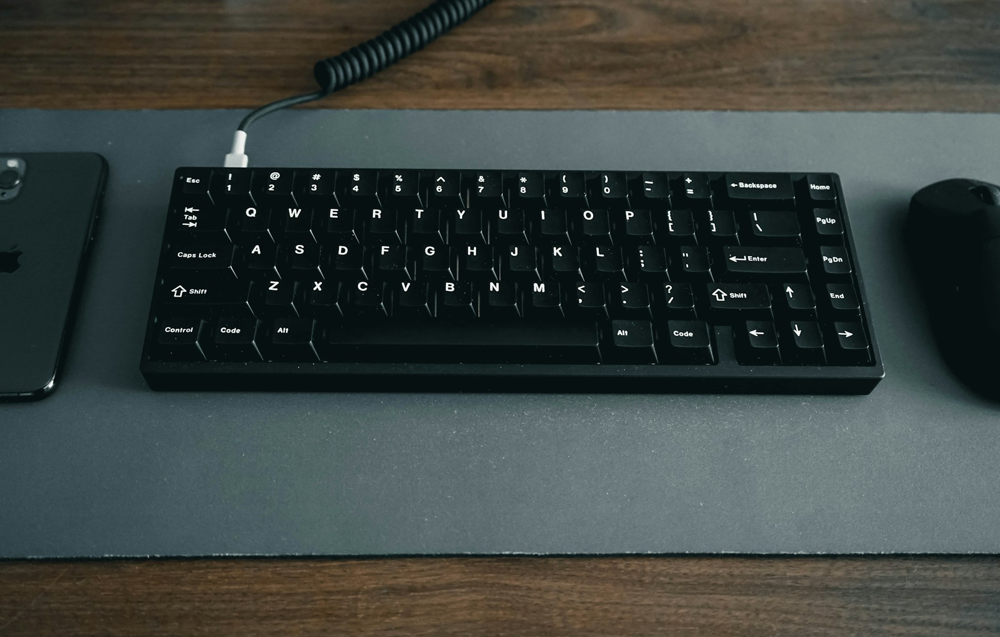
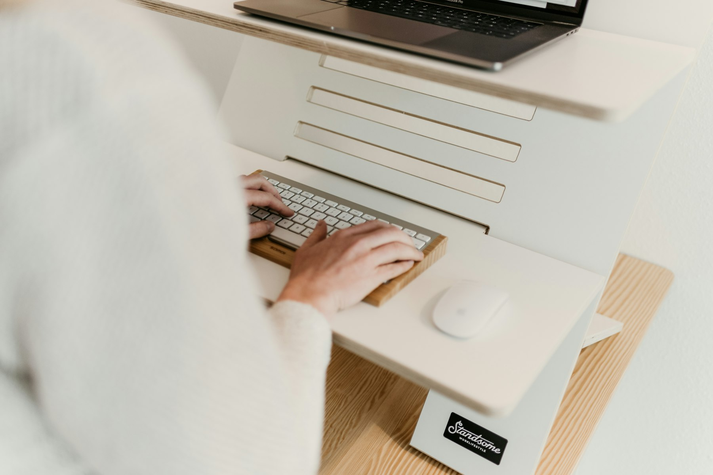
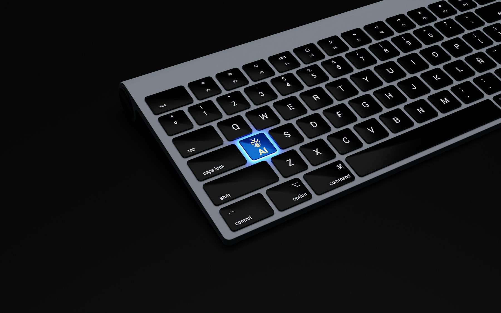
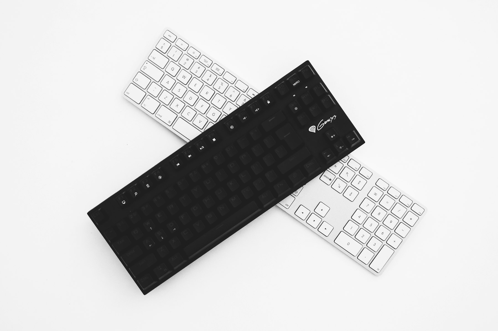
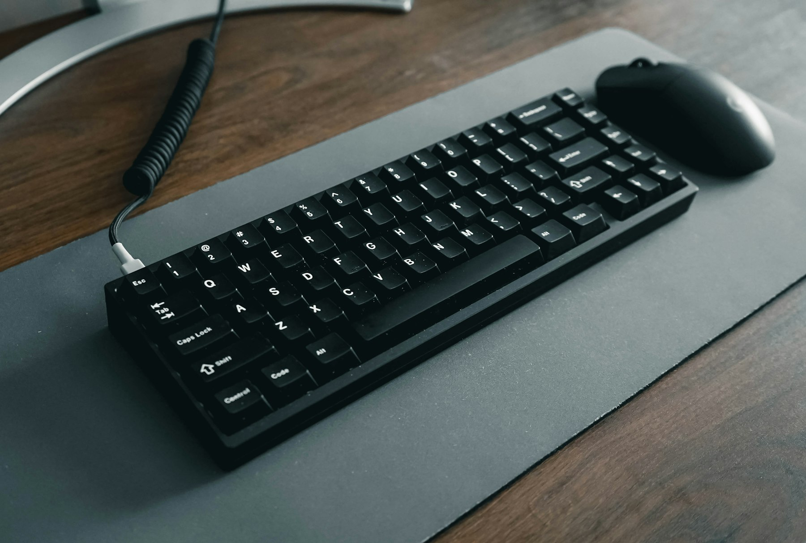
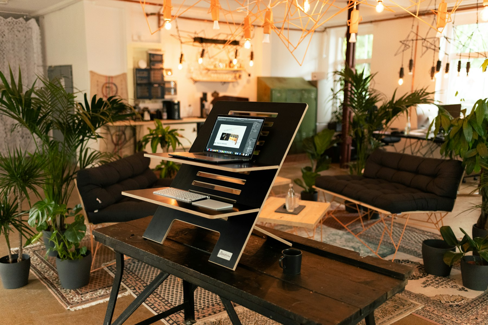

TL;DR
Choosing the best ergonomic keyboard for work can enhance your comfort and productivity.
Evaluate your typing habits, look for essential features, and test options before committing to ensure a suitable fit.

Understanding Ergonomic Keyboards
Ergonomic keyboards are designed to promote better posture and reduce strain during prolonged use.
Unlike traditional keyboards, they often feature unique shapes and layouts that align with the natural position of your hands and wrists.
When searching for one, consider the various types available.
Split keyboards separate the keys into distinct sections, which helps align your hands better.
Tented keyboards elevate the middle, letting your wrists relax.
Learning about these differences will guide your decision based on your specific working style.

Assessing Your Work Habits
Before selecting an ergonomic keyboard, evaluate your work habits.
How many hours a day do you type?
Do you often use hotkeys for efficiency?
Understanding your needs will help narrow down your options.
For instance, if you spend a lot of time on programming or graphic design, look for keyboards that have customizable keys.
If your tasks are mainly writing, a simpler keyboard might suffice.
Knowing how you work allows you to make a more informed choice.

Top Features to Consider
When shopping for an ergonomic keyboard, several features can enhance your experience.
Look for adjustable height options, padded wrist rests, and customizable key positions.
These features can significantly improve comfort.
It's also worth exploring keyboard layouts.
Some ergonomic models offer a keyboard with a slight curve or full separation for each hand.
Testing these features in a store or through reviews can help you decide what feels best for you.

Budgeting for Your Purchase
Ergonomic keyboards can vary widely in price.
Setting a budget will help you focus on options within your range.
Prices usually range from $40 to upwards of $
200.
If you're on a tighter budget, consider refurbished models, which can offer quality at a lower price.
However, be cautious and ensure you buy from credible sellers.
Sometimes investing a bit more in a quality keyboard can save you future discomfort and health issues.

User Reviews and Recommendations
User reviews can provide invaluable insights about specific models.
Websites like Amazon or ergonomic specialty sites often have customer feedback that can help guide your choice.
Look for models with frequent positive feedback regarding comfort during long typing sessions.
Additionally, consider joining freelancer forums and communities where members share their experiences with various ergonomic keyboards.
Testing Before You Commit
If possible, test the keyboards before making a final decision.
Many specialty stores allow in-store testing for their ergonomic keyboards.
This is a crucial step since everyone’s comfort levels differ.
Spend time typing and navigating with the keyboard to ensure it matches your preferences.
Bring a laptop or your work to simulate real conditions.
If online shopping is your only option, check return policies to give yourself a fallback if it doesn’t meet your expectations.

Maintaining Your Ergonomic Setup
Once you invest in an ergonomic keyboard, it's essential to maintain your workspace ergonomically.
Take regular breaks to avoid fatigue and adjust your chair and monitor height to align well with the keyboard.
Also, ensure that your workspace is clutter-free to reduce unnecessary movements.
Regularly assess your posture as you type to avoid developing bad habits.
This holistic approach—combining the right tools and practices—will maximize your productivity and comfort.
FAQ
What are the benefits of using an ergonomic keyboard?
Ergonomic keyboards can reduce strain in your hands and wrists, which can prevent long-term injuries. They also promote better posture while you work, enhancing comfort over long periods.
Are ergonomic keyboards suitable for all types of work?
Yes, ergonomic keyboards can be beneficial for various tasks, from writing to programming and even graphic design. The key is to find one that suits your specific needs and work style.
How do I know if an ergonomic keyboard is right for me?
Test different models if possible, focusing on comfort and how well they meet your typing needs. Make sure the keyboard aligns well with your posture and typing habits.
Photo credits
- Photo 1: Jessica Lam on Unsplash (https://unsplash.com/@lovelle) (https://unsplash.com/photos/black-computer-keyboard-on-brown-wooden-table-fq-Ks10WtWI)
- Photo 2: Standsome Worklifestyle on Unsplash (https://unsplash.com/@standsome) (https://unsplash.com/photos/a-person-is-typing-on-a-computer-keyboard-zY1ZWW1_CqE)
- Photo 3: BoliviaInteligente on Unsplash (https://unsplash.com/@boliviainteligente) (https://unsplash.com/photos/a-black-keyboard-with-a-blue-button-on-it-kECRXz0m42A)
- Photo 4: C. G. on Unsplash (https://unsplash.com/@cg) (https://unsplash.com/photos/two-black-and-white-wireless-keyboards-lCwwN8VAnGs)
- Photo 5: Jessica Lam on Unsplash (https://unsplash.com/@lovelle) (https://unsplash.com/photos/black-computer-keyboard-on-gray-table-yEF7MFfVbp8)
- Photo 6: Kenny Eliason on Unsplash (https://unsplash.com/@heyquilia) (https://unsplash.com/photos/white-apple-magic-keyboard-4kjcmPhsGkc)
- Photo 7: Standsome Worklifestyle on Unsplash (https://unsplash.com/@standsome) (https://unsplash.com/photos/a-laptop-computer-sitting-on-top-of-a-wooden-table-o9ZR9u-VSnk)